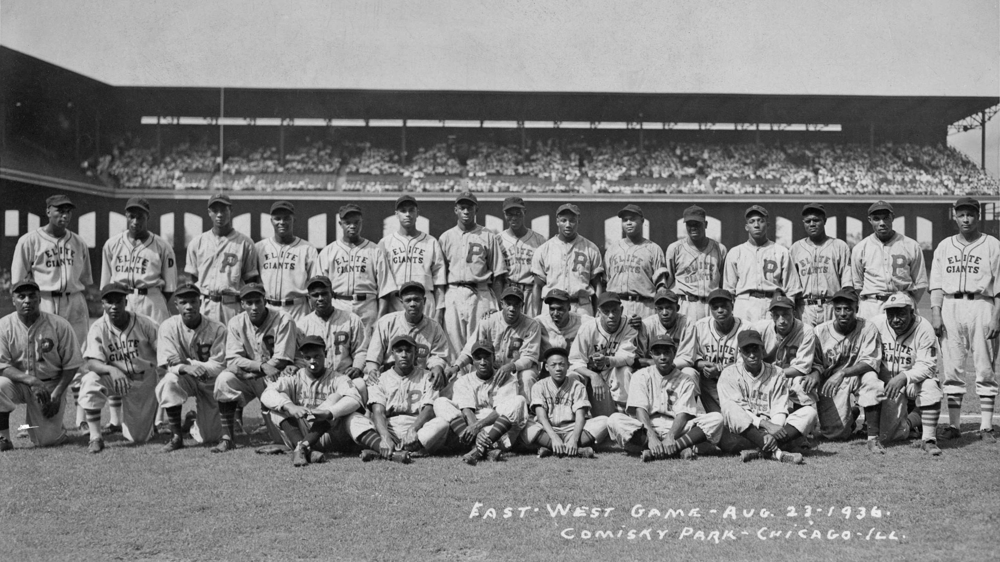

August 1, 1943. Comiskey Park, Chicago. Fifty-one thousand
seven hundred and twenty-three people. Documented.
On August 1, 1943, 51,723 people came to Comiskey Park on Chicago's South Side to watch the Negro Leagues' annual midsummer classic.
The MLB All-Star Game that year drew 31,938. The gap was 19,785 people -- a full minor league stadium worth of fans more.
The mainstream press barely noticed.
The Chicago Defender put it on the front page.
The East-West Game was conceived in July 1933 -- six weeks after Comiskey Park hosted the inaugural MLB All-Star Game in the same building. Gus Greenlee. Robert Cole. Roy Sparrow. Bill Nunn of the Pittsburgh Courier. They built the game the country was told didn't exist.
The MLB All-Star Game in July 1933 was a one-time exhibition arranged to coincide with the Chicago World's Fair. It became annual because the country liked it. The East-West Game was a deliberate reply, made in the same room: a midsummer classic for the league the official record refused to count.
The vote was the design. MLB All-Star selections were controlled by managers and players for decades. The East-West ballot was carried in the Black press from the first year -- the Pittsburgh Courier, the Chicago Defender, the Baltimore Afro-American, the Amsterdam News, the Kansas City Call. Twenty papers. Fans mailed in their selections from across the country, weeks in advance, certain their vote mattered.
More than a million ballots over the game's 30-year run. The community built the institution, ran it on its own terms, and filled Comiskey Park with it.

East-West All-Star Game attendance vs. MLB All-Star Game attendance, 1933 to 1948. The years the gold line sits above the blue are the chapter's argument. The 1943 peak is a slightly larger dot. The chart does not include the years after 1948 -- that grief belongs in a later chapter.
Seven crossover years out of fifteen measured. Every shaded region is a year when more people came to the East-West Game than to the official All-Star Game played by the league the country was told was the only one.
The East-West Game was democratic in a way the MLB All-Star Game was not. MLB's voting was controlled by managers and players for decades. The East-West ballot ran in twenty Black newspapers and the fans filled it in by hand. This is a designed evocation of one -- not a reproduction of any copyrighted original.
Twenty Black newspapers carried the ballot every year -- the Pittsburgh Courier, the Chicago Defender, the Baltimore Afro-American, the Amsterdam News, the Kansas City Call, the Norfolk Journal & Guide, and fifteen more.
The East-West All-Star Game was the biggest event in black America except a Joe Louis fight.-- Larry Lester, historianBlack Baseball's National Showcase -- 2020
A West 2 -- East 1 victory. The biggest crowd in East-West history. The mainstream press did not send a reporter. The Chicago Defender put it on the front page. What follows is documented from contemporary primary sources.
The first inning. Satchel Paige is on the mound for the West -- his first East-West starting appearance. Josh Gibson is at the plate.
Paige walks Gibson. The only baserunner he allows in three innings. Of all the people on the field that afternoon, two are widely considered among the greatest players in the history of the game. They face each other once. Paige throws nothing he can hit.
Paige vs. Gibson, in front of 51,723 people. The mainstream press did not cover it.
Buck Leonard's home run in the ninth wins the game for the West, 2--1.
The Chicago Defender's account ran on the front page. The Pittsburgh Courier's Wendell Smith filed two columns. The Black press has the box score, the inning-by-inning, the photographs, and the crowd. The major Chicago dailies the next morning carried a paragraph below the high school baseball roundup. The attendance figure is not in their copy.
The number is 51,723. It is documented. The official record did not think to count it. This chapter counts it.
| Team | 1 | 2 | 3 | 4 | 5 | 6 | 7 | 8 | 9 | R |
|---|---|---|---|---|---|---|---|---|---|---|
| East | 0 | 1 | 0 | 0 | 0 | 0 | 0 | 0 | 0 | 1 |
| West | 0 | 0 | 0 | 1 | 0 | 0 | 0 | 0 | 1* | 2 |
Every name below appears in a specifically dated Black-press account of an East-West Game. Appearances that cannot be sourced to a specific document are not shown.
Twenty-four starters. Hall of Fame inductees marked in gold with the year of their induction. Documented-gap markers for players whose credentials Oscar identifies as comparable to inducted players who were never inducted.
The methodology mirrors the Criteria Compliance Model from the One Long Impersonation platform -- applied here to baseball rather than to rock and roll. Labeled as model output. Oscar reviews the underlying criteria application. Elias reviews the calculation.
Black press coverage on the left. Mainstream press coverage on the right. Every headline and column count below is sourced to a specifically dated edition. Where the mainstream coverage is an absence, the absence itself is the documented evidence.
The Black press treated the East-West Game as the Game of Games from the first year. The mainstream press treated it as no game at all. The contrast is the chapter's editorial argument, made visual.